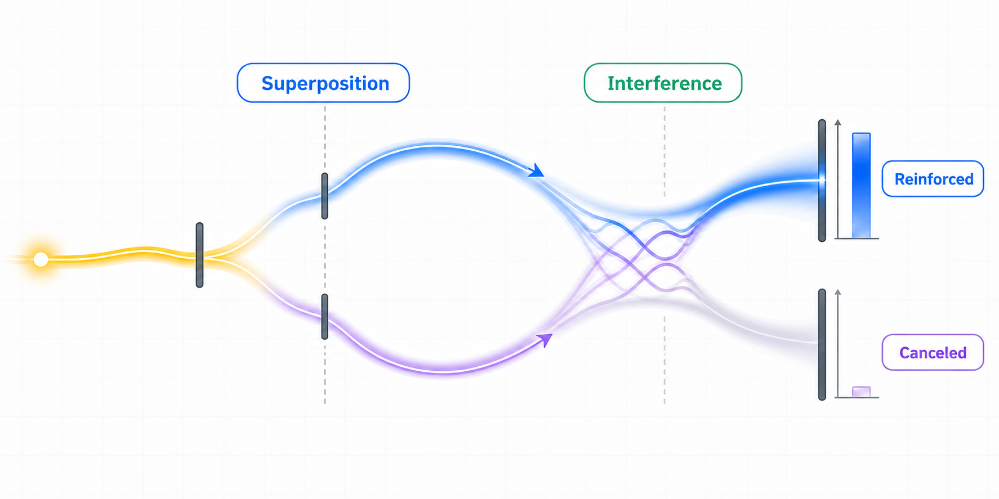

Chapter 4. What Are Superposition and Interference?
In Chapters 1 and 2, we read a one-qubit state as an amplitude in the |0⟩ direction and an amplitude in the |1⟩ direction.
Now we are going to see situations where an amplitude does not stay in only one place, but sits in several directions and later contributes to the same measurement result again.
The wording may start to feel abstract here. For now, do not try to memorize both concepts perfectly; first keep only the flow in mind: amplitude can split, and amplitude contributions can meet again.
The goal is to see why the two concepts appear together. Put simply, superposition is a state where amplitude is not in only one direction but sits in several directions at once.
Interference is what happens when those split amplitude contributions meet again at the same measurement result and add together or cancel.

Start by locating where the amplitude is
The |0⟩ state has amplitude 1 for measurement result 0 and amplitude 0 for measurement result 1.
In other words, all of the state's amplitude sits in the |0⟩ direction.
If we measure this state immediately, measurement result 0 appears with probability 100%.
At this point the amplitude has not been split, so there is no real reason to talk about superposition or interference yet.
Superposition means amplitudes sit in several basis-state directions
Some gates send amplitude that was gathered in one direction into several basis-state directions.
For example, when we apply the H gate to the |0⟩ state, the state changes like this.
Now the state has amplitude in the |0⟩ direction and amplitude in the |1⟩ direction.
When two or more basis states participate in forming one state, we call that state a superposition.
| State | Amplitude in |0⟩ | Amplitude in |1⟩ | How to read it |
|---|---|---|---|
|0⟩ | 1 | 0 | Amplitude sits in one direction |
H|0⟩ | 1/√2 | 1/√2 | Amplitude sits in two directions |
It means the state before measurement itself has amplitudes in several basis-state directions.
Interference appears when split amplitude contributions meet again
If we apply another gate to a superposition state, the amplitude in each basis-state direction can send contributions toward several measurement results again.
At that point, contributions that started from different places can arrive at the same measurement result.
|0⟩ direction contributes toward measurement results 0 and 1.
|1⟩ direction also contributes toward measurement results 0 and 1.
Amplitude contributions with matching sign and phase reinforce each other.
Contributions with opposite sign or opposite phase can cancel each other.
Amplitude contributions add in the same direction
The amplitude for that measurement result becomes larger, so the measurement probability becomes larger too.
Amplitude contributions erase each other
The amplitude for that measurement result disappears, so the measurement probability becomes 0.
A preview with two H gates
Later, when we study the H gate carefully, we will calculate how applying H once to |0⟩ creates a superposition.
Then we will apply H to the same qubit again and see amplitude contributions reinforce and cancel so that the state returns to |0⟩.
The first H gate splits one direction of amplitude into two directions
At this step, both the |0⟩ direction and the |1⟩ direction participate in the state vector.
The second H gate makes the two amplitude contributions meet again
At this step, the amplitude on the |0⟩ side is reinforced, while the amplitude on the |1⟩ side is canceled.
Superposition is the situation where amplitudes sit in several basis-state directions, and interference is the calculation effect that appears when those amplitude contributions meet again at the same measurement result.